CS 8803 CGA - SDF Representation
Mesh -> SDF
Question I: Triangle -> SDF
- Given an arbitrary object for which we cannot derive an analytical expression or a combination of expressions to represent its SDF, we aim to create a representation that characterizes its shape.
- More spacifically, we want a data structure to store SDF as a field for future querying, which reminds us of texture mapping (given a set of coordinates, return a color vector).
Recap: Texture Image
Given an inquiry point (u,v), we want to read its color from the image. As shown in the figure, black dots represent pixels. Only this small square contributes to the interpolated value of the purple point, and all other adjacent squares don’t matter.
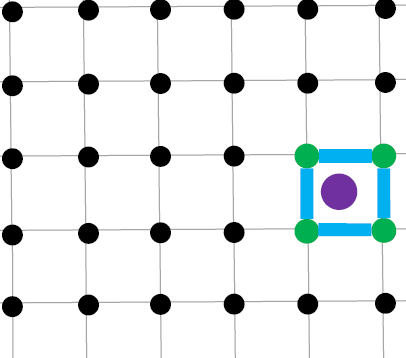
To interpolate the value at the purple point, we use bilinear interpolation (for 2D it’s bilinear interpolation and for 3D it’s trilinear interpolation). First, to determine the position of P within the square, we assume s is pixel size, and then we have:
After normalization, we assume the edge length of the square is 1. The Key idea is to use the area of the opposite sub-rectangle.
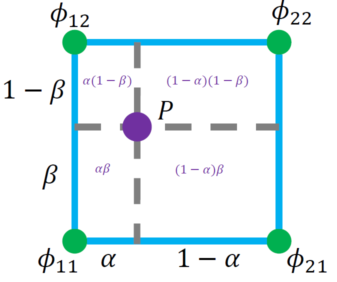
Data Structure: SDF Grid
Similar to texture image, we store the SDF for each pixel based on its position. In the context of SDF, we call this texture space a grid and each pixel on the texture a grid node. See the figure below for the definitions for nodes and cells. Get the incident nodes for a spacific cell based on their indices.
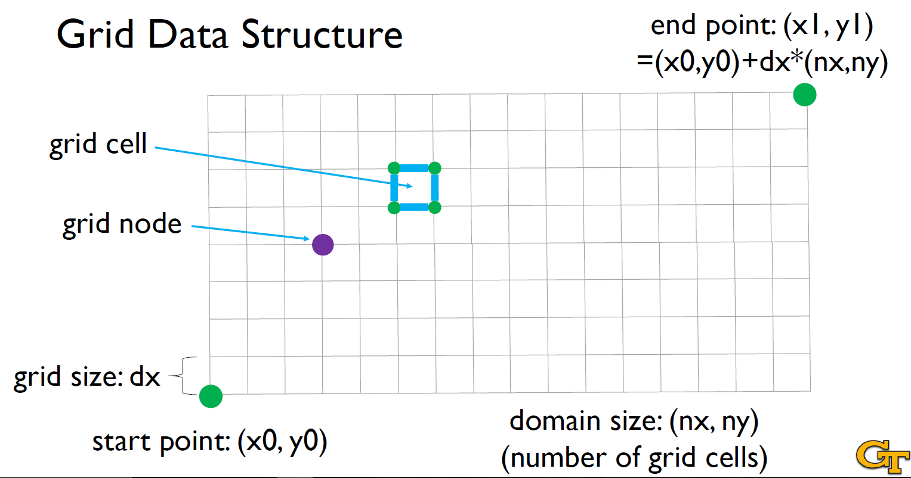
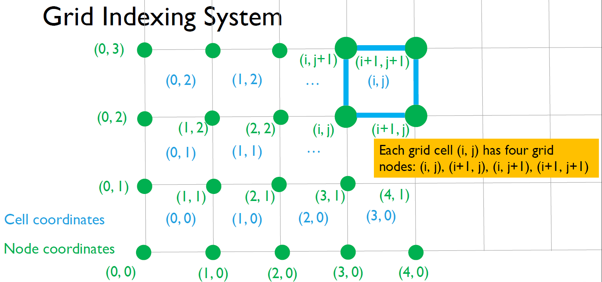
Calculate the SDF for each grid node
The idea is to follow the definition of SDF by finding the query point’s closest point on the surface and then use its distance as the SDF. For example, if the input shape is a triangle mesh, we can calculate the distance from the query point to all the triangles on the mesh surface and then find the closest distance. For 2D SDF, we calculate the distances between the query point and a group of segments. For 3D SDF, we calculate the distances between the query point and a group of triangles. We then determine the sign of the SDF by checking whether the query point is outside (+) or inside (-) the triangle mesh object (with ray casting method).
Pseudo Code: Mesh-to-SDF Construction (A Naïve Version)
1 | |
Improvements in SDF calculation
As in the comments in the pseudocode, there are some parts of the algorithm that can be improved.
Improvement I: Propagate a Front of SDF Values
- Key Idea: Instead of calculating SDF for all nodes, we want to only calculate the SDF values for the grid nodes that are near the surface (i.e., within a narrowband of the surface), while for grid nodes that are far away from the surface (i.e., outside the narrowband), we calculate their SDF values by solving a mathematical equation.
- When calculating SDF gradient, for an arbitrary point x in the 2D domain, the magnitude of its gradient always satisfies: . In SDF calculation, this gradient equation has a more generalized name called the Eikonal equation. The process of solving this equation is called the Fast Marching Method (FMM).
Eikonal Equation and Fast Marching
- We first calculate the SDF values for all the grid nodes that are within the narrowband of the surface
- Then we propagate the front of SDF values from the narrowband to the regions outside the narrowband. This step is typically implemented with a minimum heap like the Dijkstra shortest-path algorithm. Each time, we select a node that is on the front and calculate its SDF value by solving the Eikonal equation.
- See the figure below, assume the edge length of the cell is 1, then we can approximate the partial gradient on x-axis and y-axis as and . Then the magnitude of the gradient can be calculated as in the equation in the figure.
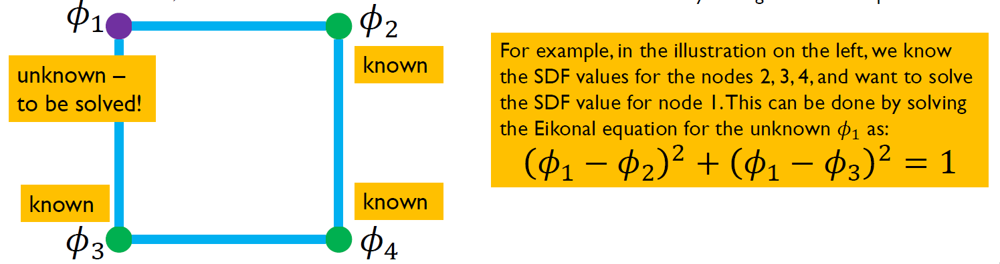
Improvement II: Store Triangles in a Hash Table
- Key Idea: Instead of going through all triangles for a query node to find the minimum distance from these triangles, we can store triangles in a hash table and only use the triangles that are close by.
- Each grid cell has a hash key generated by its grid cell indices (i,j) and a hash value as a list of triangle indices.
- For each query grid node, we only look at the hash table cells that are neighboring to the node.
- This algorithm is called Spatial Hashing, which has been widely used in many different graphics applications such as physics simulation, collision query, and neural representation.
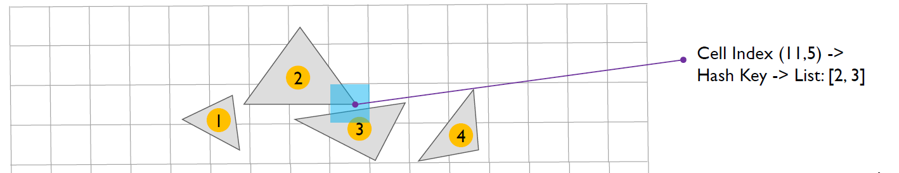
Improved SDF Calculation
Pseudo Code: Mesh-to-SDF Construction
1 | |
Calculate the SDF for an arbitrary query point
- As described above, we can calculate and store the SDF for each grid node based on its position.
- Then we can calculate the SDF for an arbitrary query point based on nodes’ SDF:
- Determine which grid cell the query point falls into;
- Calculate the fraction of the point inside the cell;
- Calculate SDF by interpolating the values from the corners of the grid cell.
Pseudo code for SDF calculation
- Step I: Determine grid cell:
Here, (i, j) is the the coordinate of the bottom-left node of the square. - Step II: Calculate the fractions inside the cell:
- Step III: Interpolate SDF value:
Calculate the SDF gradient on a grid
We approximate the gradient by calculating the difference of SDF values between the neighboring nodes along each axis. This idea is called “finite difference,” which has been widely used in scientific computing.
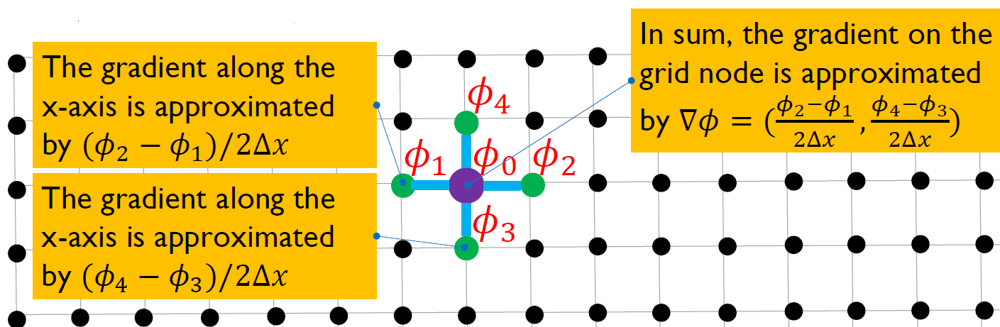
We can also extend the idea of “finite difference” to 3D gradient calculation.
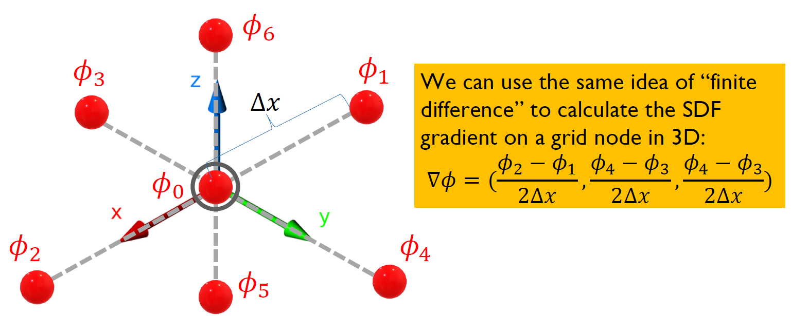
Find the closest point from the query point onto the surface with grid
Based on the definition of closest point and closest distance, we can
- read the SDF value ;
- calculate the SDF gradient ;
- move along by the distance of .
Again, the SDF value can be approximated with linear interpolation, and the SDF gradient can be approximated with finite difference.
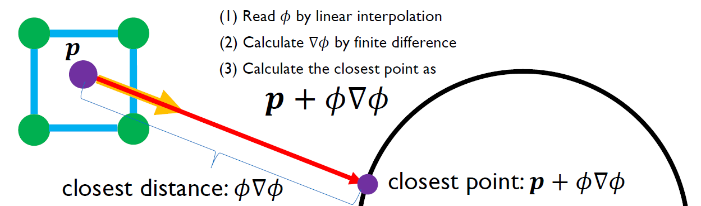
Render an SDF object on grid
We use the grid to query SDF for each step along the ray. Everything else remains the same as our previous ray marching implementation. The same idea works for adaptive-step (each step we have a circle whose radius is the current SDF) ray marching as well. We just need to query SDF for each step from the background grid.
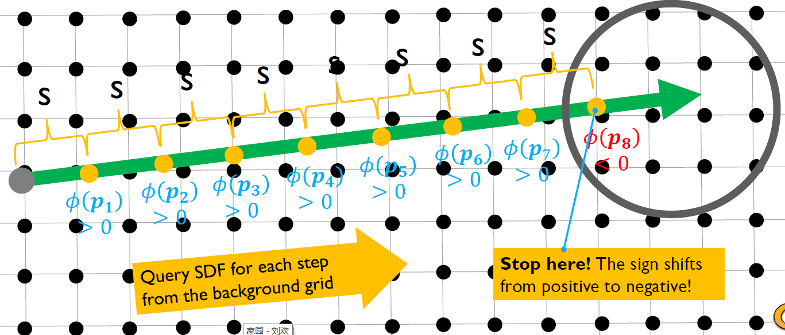
Key Takeaway for SDF Calculation
- Store SDF values on a grid
- The SDF value for each grid node can be calculated by finding the shortest distance from all the triangles
- Accelerate this calculation by propagating a front of SDF values from the surface (Fast Marching Method)
- After initializing the SDF values on the grid, we can use it as a black box for ray marching rendering
PS: In the above content we discussed how to convert meshes (triangles) to SDF. Other data structures can also be converted to SDF. For example, for point cloud or particles, we can treat each point as an implicit sphere and then calculate the point-based surface as the union of main spheres.
See the figure below, the green dots represent individual points in the point cloud. The black circles surrounding them are the implicit spheres associated with each point. The gray contour represents the final surface formed by the union of these spheres.
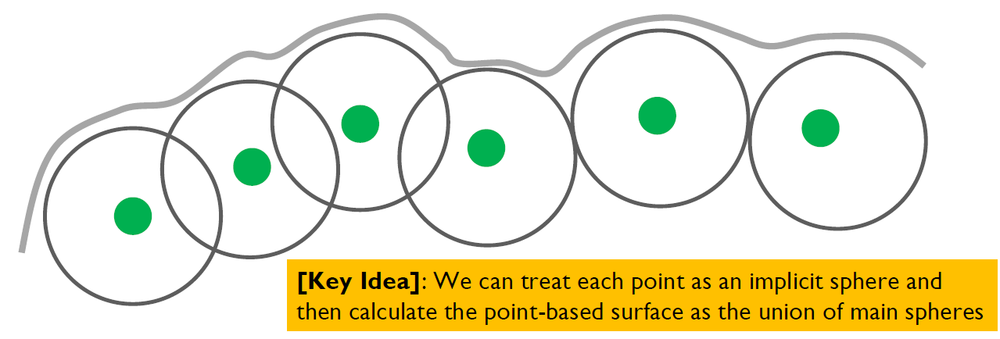
SDF -> Mesh
How to find a surface
The idea is to look at each edge on the grid cell and check if it has two different signs on its two nodes. If an edge has two different signs, then there is a surface point (just imagine the surface intersects with the grid edge on this point) on this edge. We find all such surface points and connect them.
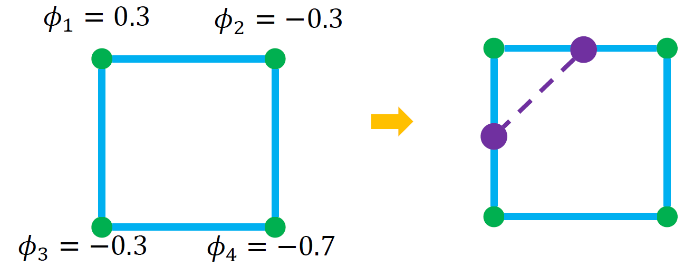
How to enumerate all cases
- Each grid node has two cases (+/-), and in total there are 2^4 = 16 cases that we can enumerate
- For each case we can draw its surface segments
- By collecting all the segments into a segment mesh, we will extract the zero-contour of an SDF object from its grid representation
- For implementation, we usually build a table for the enumeration of all cases
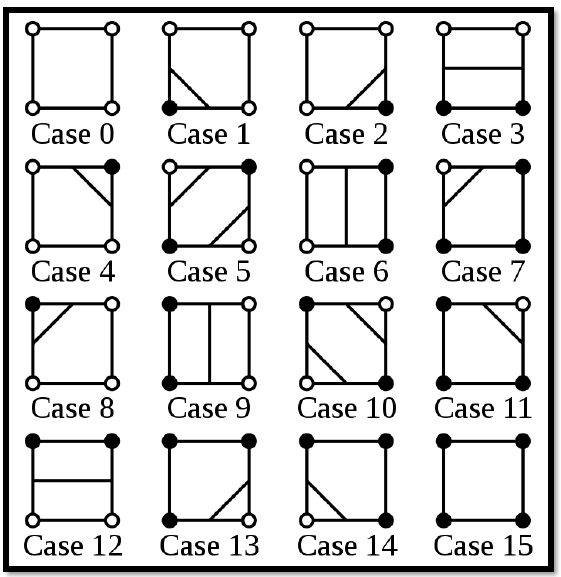
This algorithm is called Marching Squares proposed by Lorensen, W. E., & Cline, H. E. in 1987.
Extend Marching Squares to 3D
- We extract triangles instead of segments for 3D
- There are 15 unique cases considering symmetry, and 2^8 = 256 cases in total
- We maintain a giant table to enumerate all cases
- The algorithm is called “Marching Cubes”
Examples for Marching Cubes
- See the figure below, each node in the cell has an SDF value, and we want to reconstruct the surface mesh that intersects with this cell.
- Step I: find all edges that have different signs (i.e., one positive sign and one negative sign)
- Step II: Connect these edges to form triangles
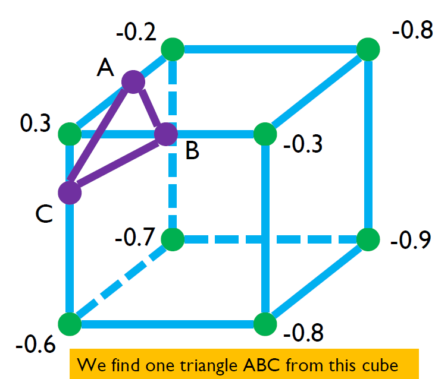
- Each node in the cell has an SDF value, and we want to reconstruct the surface mesh that intersects with this cell.
- Step I: find all edges that have different signs (i.e., one positive sign and one
negative sign) - Step II: Connect these edges to form triangles
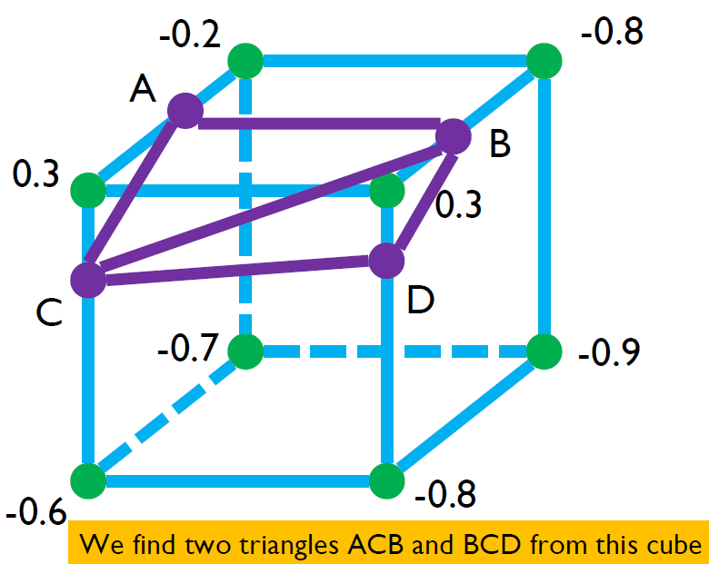
For each of the 2^8 = 256 cases, we can draw triangles by following these steps, and store the way to calculate these triangles in a giant table.